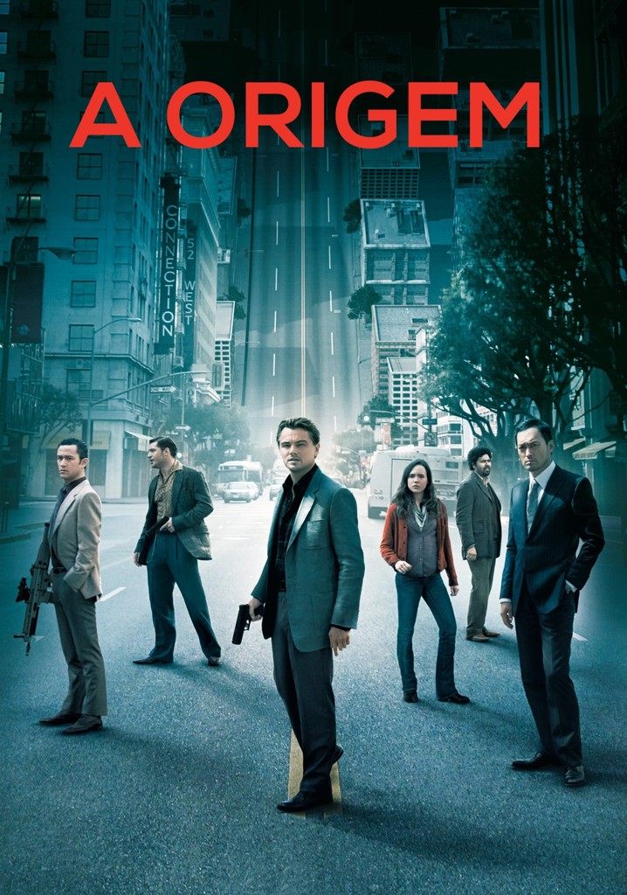

A Origem

- Direção: Christopher Nolan
- Produção: Christopher Nolan, Emma Thomas
- Roteiro: Christopher Nolan
- Elenco: Leonardo DiCaprio, Ken Watanabe, Joseph Gordon-Levitt, Marion Cotillard, Ellen Page, Tom Hardy, Cillian Murphy, Tom Berenger, Michael Caine
- Música: Hans Zimmer
- Estúdio: Legendary Pictures, Syncopy
- Distribuição: Warner Bros. Pictures
- Lançamento: 16 de julho de 2010
- Duração: 148 minutos
- Idioma: Inglês
- Gênero: Ficção Científica, Suspense
- Sensura: 14 Anos
- Sinopse: Dom Cobb é um ladrão habilidoso, o melhor na perigosa arte da extração, o roubo de segredos valiosos das profundezas do subconsciente durante o sono com sonhos, quando a mente está mais vulnerável. A rara habilidade de Cobb o tornou um cobiçado jogador no traiçoeiro novo mundo da espionagem corporativa, mas também o transformou em um fugitivo internacional e custou-lhe tudo o que ele já amou. Agora, Cobb tem uma chance de redenção. Um último trabalho pode dar-lhe sua vida de volta, mas somente se ele puder realizar o impossível: a origem. Em vez de roubar um sonho, Cobb e sua equipe têm que fazer o inverso; sua tarefa não é roubar uma ideia, mas plantar uma. Se eles tiverem sucesso, pode ser o crime perfeito.